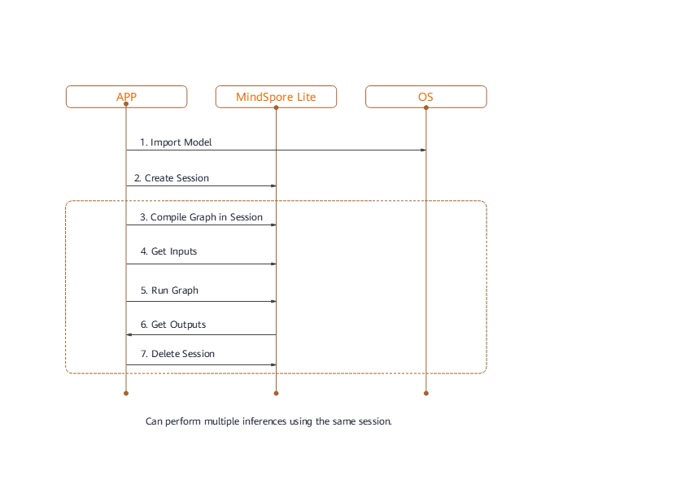

Using Runtime for Model Inference

Overview
After model conversion using MindSpore Lite, the model inference process needs to be completed in Runtime.
The procedure for using Runtime is shown in the following figure:

Its components and their functions are described as follows:
Model: model used by MindSpore Lite, which instantiates the list of operator prototypes through image composition or direct network loading.Lite Session: provides the graph compilation function and calls the graph executor for inference.Scheduler: operator heterogeneous scheduler. It can select a proper kernel for each operator based on the heterogeneous scheduling policy, construct a kernel list, and split a graph into subgraphs.Executor: graph executor, which executes the kernel list to dynamically allocate and release tensors.Operator: operator prototype, including operator attributes and methods for inferring the shape, data type, and format.Kernel: operator, which provides specific operator implementation and the operator forwarding function.Tensor: tensor used by MindSpore Lite, which provides functions and APIs for tensor memory operations.
Reading Models
In MindSpore Lite, a model file is an .ms file converted using the model conversion tool. During model inference, the model needs to be loaded from the file system and parsed. Related operations are mainly implemented in the Model component. The Model component holds model data such as weight data and operator attributes.
A model is created based on memory data using the static Import method of the Model class. The Model instance returned by the function is a pointer, which is created by using new. If the pointer is not required, you need to release it by using delete.
If there is a large limitation on the runtime memory, you can use the Free interface to reduce the memory usage after the Model is compiled. But once the Free interface of a certain Model is called, the Model can no longer perform graph compilation.
Session Creation
When MindSpore Lite is used for inference, sessions are the main entrance of inference. You can compile and execute graphs through sessions.
Creating Contexts
Contexts save some basic configuration parameters required by sessions to guide graph compilation and execution. The definition of context is as follows:
MindSpore Lite supports heterogeneous inference. The preferred backend for inference is specified by device_ctx_ in Context and is CPU by default. During graph compilation, operator selection and scheduling are performed based on the preferred backend.
MindSpore Lite has a built-in thread pool shared by processes. During inference, thread_num_ is used to specify the maximum number of threads in the thread pool. The default maximum number is 2. It is recommended that the maximum number be no more than 4. Otherwise, the performance may be affected.
MindSpore Lite supports dynamic memory allocation and release. If allocator is not specified, a default allocator is generated during inference. You can also use the Context method to allow multiple Context to share the memory allocator.
If users create the Context by using new, it should be released by using delete once it’s not required. Usually the Context is released after finishing the session creation.
Creating Sessions
Use the Context created in the previous step to call the static CreateSession method of LiteSession to create LiteSession. The LiteSession instance returned by the function is a pointer, which is created by using new. If the pointer is not required, you need to release it by using delete.
Example
The following sample code demonstrates how to create a Context and how to allow two LiteSession to share a memory pool.
auto context = new (std::nothrow) lite::Context;
if (context == nullptr) {
MS_LOG(ERROR) << "New context failed while running %s", modelName.c_str();
return RET_ERROR;
}
// The preferred backend is GPU, which means, if there is a GPU operator, it will run on the GPU first, otherwise it will run on the CPU.
context->device_type_ = lite::DT_GPU;
// The medium core takes priority in thread and core binding methods. This parameter will work in the BindThread interface. For specific binding effect, see the "Run Graph" section.
context->cpu_bind_mode_ = MID_CPU;
// Configure the number of worker threads in the thread pool to 2, including the main thread.
context->thread_num_ = 2;
// Allocators can be shared across multiple Contexts.
auto *context2 = new Context();
context2->thread_num_ = context->thread_num_;
context2->allocator = context->allocator;
context2->device_type_ = context->device_type_;
context2->cpu_bind_mode_ = context->cpu_bind_mode_;
// Use Context to create Session.
auto session1 = session::LiteSession::CreateSession(context);
// After the LiteSession is created, the Context can be released.
delete (context);
if (session1 == nullptr) {
MS_LOG(ERROR) << "CreateSession failed while running %s", modelName.c_str();
return RET_ERROR;
}
// session1 and session2 can share one memory pool.
auto session2 = session::LiteSession::CreateSession(context2);
delete (context2);
if (session2 == nullptr) {
MS_LOG(ERROR) << "CreateSession failed while running %s", modelName.c_str();
return RET_ERROR;
}
Graph Compilation
Variable Dimension
When using MindSpore Lite for inference, after the session creation and graph compilation have been completed, if you need to resize the input shape, you can reset the shape of the input tensor, and then call the session’s Resize() interface.
Not all models support variable dimensions. For example, when there is a MatMul operator in the model whose input Tensor is a weight tensor and an input tensor, calling the variable dimension interface will cause the shape of the input tensor and the weight tensor being unmatched.
Example
The following code demonstrates how to resize the input of MindSpore Lite:
// Assume we have created a LiteSession instance named session.
auto inputs = session->GetInputs();
std::vector<int> resize_shape = {1, 128, 128, 3};
// Assume the model has only one input,resize input shape to [1, 128, 128, 3]
std::vector<std::vector<int>> new_shapes;
new_shapes.push_back(resize_shape);
session->Resize(inputs, new_shapes);
Compiling Graphs
Before graph execution, call the CompileGraph API of the LiteSession to compile graphs and further parse the Model instance loaded from the file, mainly for subgraph split and operator selection and scheduling. This process takes a long time. Therefore, it is recommended that LiteSession achieve multiple executions with one creation and one compilation.
/// \brief Compile MindSpore Lite model.
///
/// \note CompileGraph should be called before RunGraph.
///
/// \param[in] model Define the model to be compiled.
///
/// \return STATUS as an error code of compiling graph, STATUS is defined in errorcode.h.
virtual int CompileGraph(lite::Model *model) = 0;
Example
The following code demonstrates how to compile graph of MindSpore Lite:
// Assume we have created a LiteSession instance named session and a Model instance named model before.
// The methods of creating model and session can refer to "Import Model" and "Create Session" two sections.
auto ret = session->CompileGraph(model);
if (ret != RET_OK) {
std::cerr << "CompileGraph failed" << std::endl;
// session and model need to be released by users manually.
delete (session);
delete (model);
return ret;
}
model->Free();
Data Input
Obtaining Input Tensors
Before graph execution, you need to copy the input data to model input tensors.
MindSpore Lite provides the following methods to obtain model input tensors.
Use the
GetInputsByNamemethod to obtain vectors of the model input tensors that are connected to the model input node based on the node name./// \brief Get input MindSpore Lite MSTensors of model by node name. /// /// \param[in] node_name Define node name. /// /// \return The vector of MindSpore Lite MSTensor. virtual std::vector<tensor::MSTensor *> GetInputsByName(const std::string &node_name) const = 0;
Use the
GetInputsmethod to directly obtain the vectors of all model input tensors./// \brief Get input MindSpore Lite MSTensors of model. /// /// \return The vector of MindSpore Lite MSTensor. virtual std::vector<tensor::MSTensor *> GetInputs() const = 0;
Copying Data
After model input tensors are obtained, you need to enter data into the tensors. Use the Size method of MSTensor to obtain the size of the data to be entered into tensors, use the data_type method to obtain the data type of tensors, and use the MutableData method of MSTensor to obtain the writable pointer.
/// \brief Get byte size of data in MSTensor.
///
/// \return Byte size of data in MSTensor.
virtual size_t Size() const = 0;
/// \brief Get the pointer of data in MSTensor.
///
/// \note The data pointer can be used to both write and read data in MSTensor.
///
/// \return The pointer points to data in MSTensor.
virtual void *MutableData() const = 0;
Example
The following sample code shows how to obtain the entire graph input MSTensor from LiteSession and enter the model input data to MSTensor.
// Assume we have created a LiteSession instance named session.
auto inputs = session->GetInputs();
// Assume that the model has only one input tensor.
auto in_tensor = inputs.front();
if (in_tensor == nullptr) {
std::cerr << "Input tensor is nullptr" << std::endl;
return -1;
}
// It is omitted that users have read the model input file and generated a section of memory buffer: input_buf, as well as the byte size of input_buf: data_size.
if (in_tensor->Size() != data_size) {
std::cerr << "Input data size is not suit for model input" << std::endl;
return -1;
}
auto *in_data = in_tensor->MutableData();
if (in_data == nullptr) {
std::cerr << "Data of in_tensor is nullptr" << std::endl;
return -1;
}
memcpy(in_data, input_buf, data_size);
// Users need to free input_buf.
// The elements in the inputs are managed by MindSpore Lite so that users do not need to free inputs.
Note:
The data layout in the model input tensors of MindSpore Lite must be NHWC.
The model input
input_bufis read from disks. After it is copied to model input tensors, you need to releaseinput_buf.Vectors returned by using the
GetInputsandGetInputsByNamemethods do not need to be released by users.
Graph Execution
Executing Sessions
After a MindSpore Lite session performs graph compilation, you can use RunGraph of LiteSession for model inference.
virtual int RunGraph(const KernelCallBack &before = nullptr, const KernelCallBack &after = nullptr) = 0;
Core Binding
The built-in thread pool of MindSpore Lite supports core binding and unbinding. By calling the BindThread API, you can bind working threads in the thread pool to specified CPU cores for performance analysis. The core binding operation is related to the context specified when LiteSession is created. The core binding operation sets the affinity between a thread and CPU based on the core binding policy in the context.
/// \brief Attempt to bind or unbind threads in the thread pool to or from the specified cpu core.
///
/// \param[in] if_bind Define whether to bind or unbind threads.
virtual void BindThread(bool if_bind) = 0;
Note that core binding is an affinity operation, which is affected by system scheduling. Therefore, successful binding to the specified CPU core cannot be ensured. After executing the code of core binding, you need to perform the unbinding operation. The following is an example:
// Assume we have created a LiteSession instance named session.
session->BindThread(true);
auto ret = session->RunGraph();
if (ret != mindspore::lite::RET_OK) {
std::cerr << "RunGraph failed" << std::endl;
delete session;
return -1;
}
session->BindThread(false);
Core binding parameters can be used to bind big cores first or middle cores first.
The rule for determining big core or middle core is based on the CPU core frequency instead of CPU architecture. For the CPU architecture where big, middle, and little cores are not distinguished, this rule can be used.
Big core first indicates that threads in the thread pool are bound to cores according to core frequency. The first thread is bound to the core with the highest frequency, and the second thread is bound to the core with the second highest frequency. This rule also applies to other threads.
Middle cores are defined based on experience. By default, middle cores are cores with the third and fourth highest frequency. Middle core first indicates that threads are bound to middle cores preferentially. When there are no available middle cores, threads are bound to little cores.
Callback Running
MindSpore Lite can transfer two KernelCallBack function pointers to call back the inference model when calling RunGraph. Compared with common graph execution, callback running can obtain extra information during the running process to help developers analyze performance and fix bugs. The extra information includes:
Name of the running node
Input and output tensors before inference of the current node
Input and output tensors after inference of the current node
/// \brief CallBackParam defines input arguments for callback function.
struct CallBackParam {
std::string name_callback_param; /**< node name argument */
std::string type_callback_param; /**< node type argument */
};
/// \brief KernelCallBack defines the function pointer for callback.
using KernelCallBack = std::function<bool(std::vector<tensor::MSTensor *> inputs, std::vector<tensor::MSTensor *> outputs, const CallBackParam &opInfo)>;
Example
The following sample code demonstrates how to use LiteSession to compile a graph, defines two callback functions as the before-callback pointer and after-callback pointer, transfers them to the RunGraph API for callback inference, and demonstrates the scenario of multiple graph executions with one graph compilation.
// Assume we have created a LiteSession instance named session and a Model instance named model before.
// The methods of creating model and session can refer to "Import Model" and "Create Session" two sections.
auto ret = session->CompileGraph(model);
if (ret != RET_OK) {
std::cerr << "CompileGraph failed" << std::endl;
// session and model need to be released by users manually.
delete (session);
delete (model);
return ret;
}
// Copy input data into the input tensor. Users can refer to the "Input Data" section. We uses random data here.
auto inputs = session->GetInputs();
for (auto in_tensor : inputs) {
in_tensor = inputs.front();
if (in_tensor == nullptr) {
std::cerr << "Input tensor is nullptr" << std::endl;
return -1;
}
// When calling the MutableData method, if the data in MSTensor is not allocated, it will be malloced. After allocation, the data in MSTensor can be considered as random data.
(void) in_tensor->MutableData();
}
// Definition of callback function before forwarding operator.
auto before_call_back_ = [&](const std::vector<mindspore::tensor::MSTensor *> &before_inputs,
const std::vector<mindspore::tensor::MSTensor *> &before_outputs,
const session::CallBackParam &call_param) {
std::cout << "Before forwarding " << call_param.name_callback_param << std::endl;
return true;
};
// Definition of callback function after forwarding operator.
auto after_call_back_ = [&](const std::vector<mindspore::tensor::MSTensor *> &after_inputs,
const std::vector<mindspore::tensor::MSTensor *> &after_outputs,
const session::CallBackParam &call_param) {
std::cout << "After forwarding " << call_param.name_callback_param << std::endl;
return true;
};
// Call the callback function when performing the model inference process.
ret = session_->RunGraph(before_call_back_, after_call_back_);
if (ret != RET_OK) {
MS_LOG(ERROR) << "Run graph failed.";
return RET_ERROR;
}
// CompileGraph would cost much time, a better solution is calling CompileGraph only once and RunGraph much more times.
for (size_t i = 0; i < 10; i++) {
auto ret = session_->RunGraph();
if (ret != RET_OK) {
MS_LOG(ERROR) << "Run graph failed.";
return RET_ERROR;
}
}
// session and model needs to be released by users manually.
delete (session);
delete (model);
Obtaining Outputs
Obtaining Output Tensors
After performing inference, MindSpore Lite can obtain the model inference result.
MindSpore Lite provides the following methods to obtain the model output MSTensor.
Use the
GetOutputsByNodeNamemethod to obtain vectors of the model outputMSTensorthat is connected to the model output node based on the node name./// \brief Get output MindSpore Lite MSTensors of model by node name. /// /// \param[in] node_name Define node name. /// /// \return The vector of MindSpore Lite MSTensor. virtual std::vector<tensor::MSTensor *> GetOutputsByNodeName(const std::string &node_name) const = 0;
Use the
GetOutputByTensorNamemethod to obtain the model outputMSTensorbased on the tensor name./// \brief Get output MindSpore Lite MSTensors of model by tensor name. /// /// \param[in] tensor_name Define tensor name. /// /// \return Pointer of MindSpore Lite MSTensor. virtual mindspore::tensor::MSTensor *GetOutputByTensorName(const std::string &tensor_name) const = 0;
Use the
GetOutputsmethod to directly obtain the mapping between the names of all model output tensors and the model outputMSTensor./// \brief Get output MindSpore Lite MSTensors of model mapped by tensor name. /// /// \return The map of output tensor name and MindSpore Lite MSTensor. virtual std::unordered_map<std::string, mindspore::tensor::MSTensor *> GetOutputs() const = 0;
After model output tensors are obtained, you need to enter data into the tensors. Use the Size method of MSTensor to obtain the size of the data to be entered into tensors, use the data_type method to obtain the data type of MSTensor, and use the MutableData method of MSTensor to obtain the writable pointer.
/// \brief Get byte size of data in MSTensor.
///
/// \return Byte size of data in MSTensor.
virtual size_t Size() const = 0;
/// \brief Get data type of the MindSpore Lite MSTensor.
///
/// \note TypeId is defined in mindspore/mindspore/core/ir/dtype/type_id.h. Only number types in TypeId enum are
/// suitable for MSTensor.
///
/// \return MindSpore Lite TypeId of the MindSpore Lite MSTensor.
virtual TypeId data_type() const = 0;
/// \brief Get the pointer of data in MSTensor.
///
/// \note The data pointer can be used to both write and read data in MSTensor.
///
/// \return The pointer points to data in MSTensor.
virtual void *MutableData() const = 0;
Example
The following sample code shows how to obtain the output MSTensor from LiteSession using the GetOutputs method and print the first ten data or all data records of each output MSTensor.
// Assume we have created a LiteSession instance named session before.
auto output_map = session->GetOutputs();
// Assume that the model has only one output node.
auto out_node_iter = output_map.begin();
std::string name = out_node_iter->first;
// Assume that the unique output node has only one output tensor.
auto out_tensor = out_node_iter->second;
if (out_tensor == nullptr) {
std::cerr << "Output tensor is nullptr" << std::endl;
return -1;
}
// Assume that the data format of output data is float 32.
if (out_tensor->data_type() != mindspore::TypeId::kNumberTypeFloat32) {
std::cerr << "Output of lenet should in float32" << std::endl;
return -1;
}
auto *out_data = reinterpret_cast<float *>(out_tensor->MutableData());
if (out_data == nullptr) {
std::cerr << "Data of out_tensor is nullptr" << std::endl;
return -1;
}
// Print the first 10 float data or all output data of the output tensor.
std::cout << "Output data: ";
for (size_t i = 0; i < 10 && i < out_tensor->ElementsNum(); i++) {
std::cout << " " << out_data[i];
}
std::cout << std::endl;
// The elements in outputs do not need to be free by users, because outputs are managed by the MindSpore Lite.
Note that the vectors or map returned by the GetOutputsByNodeName, GetOutputByTensorName and GetOutputs methods do not need to be released by users.
The following sample code shows how to obtain the output MSTensor from LiteSession using the GetOutputsByNodeName method.
// Assume we have created a LiteSession instance named session before.
// Assume that model has a output node named output_node_name_0.
auto output_vec = session->GetOutputsByNodeName("output_node_name_0");
// Assume that output node named output_node_name_0 has only one output tensor.
auto out_tensor = output_vec.front();
if (out_tensor == nullptr) {
std::cerr << "Output tensor is nullptr" << std::endl;
return -1;
}
The following sample code shows how to obtain the output MSTensor from LiteSession using the GetOutputByTensorName method.
// Assume we have created a LiteSession instance named session.
// We can use GetOutputTensorNames method to get all name of output tensor of model which is in order.
auto tensor_names = session->GetOutputTensorNames();
// Assume we have created a LiteSession instance named session before.
// Use output tensor name returned by GetOutputTensorNames as key
for (auto tensor_name : tensor_names) {
auto out_tensor = session->GetOutputByTensorName(tensor_name);
if (out_tensor == nullptr) {
std::cerr << "Output tensor is nullptr" << std::endl;
return -1;
}
}
Obtaining Version String
Example
The following sample code shows how to obtain version string using Version method.
#include "include/version.h"
std::string version = mindspore::lite::Version();
Session parallel launch
MindSpore Lite supports multiple LiteSession parallel inferences, but does not support multiple threads calling the RunGraph interface of a single LiteSession at the same time.
Single Session parallel launch
MindSpore Lite does not support multi-threaded parallel calling of the inference interface of a single LiteSession, otherwise we will get the following error message:
ERROR [mindspore/lite/src/lite_session.cc:297] RunGraph] 10 Not support multi-threading
Multiple Session parallel launch
MindSpore Lite supports multiple LiteSession in doing inference in parallel. The thread pool and memory pool of each LiteSession are independent.
Example
The following code shows how to create multiple LiteSession and do inference in parallel:
#include <thread>
#include "src/common/file_utils.h"
#include "include/model.h"
#include "include/version.h"
#include "include/context.h"
#include "include/lite_session.h"
mindspore::session::LiteSession *GenerateSession(mindspore::lite::Model *model) {
if (model == nullptr) {
std::cerr << "Read model file failed while running" << std::endl;
return nullptr;
}
auto context = new (std::nothrow) mindspore::lite::Context;
if (context == nullptr) {
std::cerr << "New context failed while running" << std::endl;
return nullptr;
}
auto session = mindspore::session::LiteSession::CreateSession(context);
delete (context);
if (session == nullptr) {
std::cerr << "CreateSession failed while running" << std::endl;
return nullptr;
}
auto ret = session->CompileGraph(model);
if (ret != mindspore::lite::RET_OK) {
std::cout << "CompileGraph failed while running" << std::endl;
delete (session);
return nullptr;
}
auto msInputs = session->GetInputs();
for (auto msInput : msInputs) {
(void)msInput->MutableData();
}
return session;
}
int main(int argc, const char **argv) {
size_t size = 0;
char *graphBuf = mindspore::lite::ReadFile("test.ms", &size);
if (graphBuf == nullptr) {
std::cerr << "Read model file failed while running" << std::endl;
return -1;
}
auto model = mindspore::lite::Model::Import(graphBuf, size);
if (model == nullptr) {
std::cerr << "Import model file failed while running" << std::endl;
delete[](graphBuf);
return -1;
}
delete[](graphBuf);
auto session1 = GenerateSession(model);
if (session1 == nullptr) {
std::cerr << "Generate session 1 failed" << std::endl;
delete(model);
return -1;
}
auto session2 = GenerateSession(model);
if (session2 == nullptr) {
std::cerr << "Generate session 2 failed" << std::endl;
delete(model);
return -1;
}
model->Free();
std::thread thread1([&](){
auto status = session1->RunGraph();
if (status != 0) {
std::cerr << "Inference error " << status << std::endl;
return;
}
std::cout << "Session1 inference success" << std::endl;
});
std::thread thread2([&](){
auto status = session2->RunGraph();
if (status != 0) {
std::cerr << "Inference error " << status << std::endl;
return;
}
std::cout << "Session2 inference success" << std::endl;
});
thread1.join();
thread2.join();
delete (session1);
delete (session2);
delete (model);
return 0;
}